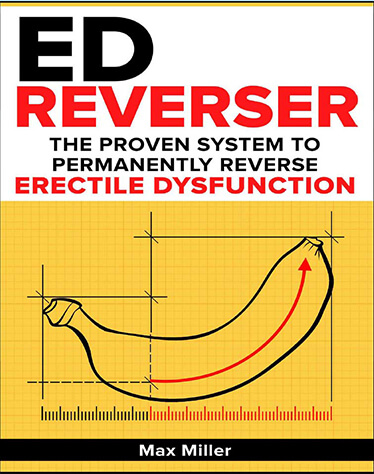

The ED Reverser - Proven, Permanent & All-Natural Cure For Erectile Dysfunction | Does It Really Work?
ED Reverser Review
ED Reverser is a program designed to help with one of the major sexual issues men are faced with – erectile dysfunction. This embarrassing problem has affected a lot of men and has made them unable to perform sexually. It can be a serious issue in a relationship if you are not able to get an erection and make love to your girlfriend or wife.
There are many male enhancement pills out there that will increase blood flow to the penis and encourage a stronger erection, but these products don’t offer a lasting or safe solution to the problem. If you would rather have an effective and natural plan that will allow you to treat this issue without having to use harmful drugs, this program is perfect for you.
Already Decided?
That's great! Click the button on your right and take the action now.
About ED Reverser
The ED Reverser program was designed to educate users on what erectile dysfunction is and how it happens. Within this system you will be able to get a complete breakdown of the mechanism of erectile dysfunction as well as the natural ingredients that you can use to completely reverse the effects of the program.
The ED reverser program works by relaxing the blood vessels with a combination of natural ingredient which has been proven to generate results. The body will produce an antibody that has been known to relax blood vessels and the natural ingredients used in the program will stimulate the reversal of the erectile dysfunction.

About the Author
The creator of the ED Reverser program is a man named Max Miller. He came up with the program after doing research on Genghis Khan, who was not only a leader of an empire but also known for being the most virile man in history. He had 6 official wives and many other mistresses, likely sleeping with thousands of women in his lifetime. So how did he have the stamina to perform without suffering from erectile dysfunction?
Genghis Khan didn’t have Viagra or other medications back then, but Max Miller claims that he has discovered the ancient Asian secret that Genghis Khan used. He insists that this natural program will help you to treat the root cause of ED so that you can get a rock solid erection. Max Miller is an expert on the subject and he has done a lot of research into the science and biology of erectile dysfunction and how it works.
Summary of ED Reverser
The program offers a lot of valuable benefits and plenty of very helpful information. It is easy to follow and explains things in a clear and straightforward way. There are also a lot of tips and tricks that you can use to get your desired result. The information within this program will give you the ability to control your erection all by yourself, without the need for pills or the risk of harmful side effects. Of course, the doctors don’t want you to know about this because then they wouldn’t be able to make lots of money selling erection drugs.

Many people believe that erectile dysfunction is caused by a lack of testosterone, but according to research this is only true in 5% of cases. When Max Miller wrote this program he realised that there had to be a more natural explanation. He realised that erections are caused by the penis filling up with blood which leads to a buildup of pressure and the hardness of an erection.
He concluded that ED is caused by the failure of your blood vessels to fully relax so that blood can flow into the penis and become trapped there. So, he developed a diet that has just the right blend of amino acids and enzymes to fight ED.
The program is based on an ancient Asian secret from Chinese medicine that is known as “Iron Horse.” It is so powerful that you will start to feel it within only 7 days. Within 30 days you will enjoy more stamina in bed, more powerful erections and better sexual performance. According to Max Miller, the author, this ancient Asian virility technique has helped around 16,300 men around the world to improve their performance.
Benefits of ED Reverser
There are many benefits to the ED Reverser. This guide will ensure that you are on your way to an improved sex life and a reduction of ED for good. You will also enjoy a higher level of confidence.
The ingredients that you use in this program are cheap and they can be found nearly anywhere. You’ll be able to find most of the ingredients, if not all of them, in your local grocery store. This is very beneficial because it means that you won’t need to go to expensive speciality supermarkets or spend a lot of money ordering products online.
The program has a 60 day money back guarantee, so you have a full 60 days to test the program without any fear of losing your money. This means that there is really no risk to giving the program a try and seeing if it works for you.
What Are You Waiting For?
Your Purchase is Backed Up by 30 Days Money Back Guarantee. If You Don't Like The Product, Give It Back And You Will Be Refunded With No Questions Asked!
Conclusion
The ED Reverser program is the best possible solution for dealing with erectile dysfunction problems and reviving your sex life again. This program will ensure that you are not suffering from performance issues and that you can achieve a powerful, hard erection whenever you want.
The effects of the program will start to show within as little as 14 days, which is great because it means that you don’t have to wait for months to get a permanent solution to your erectile dysfunction troubles. Even from the very first day you will be sure to notice an improvement in your ED condition.
One of the great things about the ED Reverser program is that it has an active refund policy of 60 days, which means that if you are not satisfied with the results you can ask for your money back. If you are skeptical about the program, this means that you can try it out and satisfy your curiosity with absolutely no risk involved.
Related Post
QUIT SMOKING MAGIC REVIEW
 Addiction/
Addiction/
ALCOHOL FREE FOREVER - HOW TO QUIT DRINKING TODAY FROM THE PRIVACY OF YOUR HOME

Recent Post
Bow Legs No More - Looking for a Permanent Remedy for Bow Legs Without the Need for Surgery?
 Denatal Health/
Denatal Health/
Dentist Be Damned How To Get Rid Of Toothache Review - Does It Really Work?
 Dental Health/
Dental Health/
Tooth Defender 100% Natural Oral Care Review - Does It Really Work?
 Beauty/
Beauty/
Skin Whitening Forever - How To Whiten Your Skin Naturally